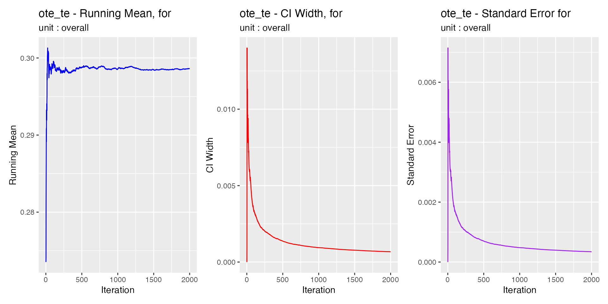
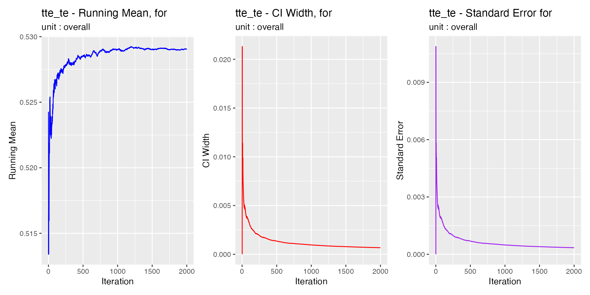

library(trieff)
#> Loaded trieff 0.8.5
#> System capable of parallel processing with multisession backend
#> Maximum available workers: 16
#> Note: Individual functions will determine optimal core usage at runtime
library(dplyr)
#>
#> Attaching package: 'dplyr'
#> The following objects are masked from 'package:stats':
#>
#> filter, lag
#> The following objects are masked from 'package:base':
#>
#> intersect, setdiff, setequal, union
# Initialize data once at the start
data <- init(sem_malmo_synth) %>%
sim_te()
#> [1] "Creating segments out of dataframe 2025-02-04 19:13:10.085361"
#> [1] "Initial segments: 9784 Total patients: 124311"
#> [1] "Filtered to 1486 segments with LOSET cases"
#> [1] "Total LOSET cases: 5491"
#> [1] "Creating batches 2025-02-04 19:13:15.726852"
#> [1] "Starting multisession with 1 cores. 2025-02-04 19:13:15.733362"
#> [1] "Simulations are done! 2025-02-04 19:13:20.476705"Bootstrap analysis in trieff provides confidence intervals for Triage Effectiveness metrics and enables assessment of statistical stability. This vignette demonstrates how to use bootstrapping effectively and interpret the results.
The confidence intervals calculated here can be visualized using the
plotting functions described in vignette("plot_te"). The
visualization provides an intuitive way to understand the uncertainty in
TE estimates.
vignette("calc_te"))vignette("sim_te"))Bootstrapping helps us understand:
The reliability of our TE metrics
The stability of our estimates
The impact of rare events and outliers
For reliable bootstrap analysis, we recommend using at least 3 months of ED data, though this guideline is based on preliminary analysis and may need adjustment for your specific context.
Let’s start with a basic example using default bootstrap parameters. We’ll use overall_only=TRUE to keep the output focused:
# Calculate TE with bootstrap
te_results <- calc_te(data,
bootstrap = TRUE,
overall_only = TRUE)
#> [1] "Starting bootstrap iterations 2025-02-04 19:13:20.99566"
#> [1] "Bootstrap iterations done 2025-02-04 19:13:39.722818"
# View results
print(te_results)
#>
#> Triage Effectiveness Analysis Results
#> ===================================
#>
#> Results for Overall Results
#> ---------------------------
#> Total patients: 124311 (4.4% LOSET positive)
#>
#> Classification Metrics:
#> Sensitivity: 73.7%
#> Specificity: 65.9%
#>
#> Triage Effectiveness Metrics:
#> OTE: 29.9%
#> TTE: 52.8%
#> OTG: -23.0%
#>
#> Bootstrap Variation Intervals:
#> OTE: 29.9% (26.8% to 32.9%)
#> TTE: 52.8% (49.7% to 55.7%)
#> OTG: -23.0% (-22.9% to -22.8%)
#>
#> Computation Information
#> =====================
#> Method: Bootstrap calculation
#> Number of iterations: 2000
#> Sample percentage: 100%
#> Distribution span: 95%
#> Calculation time: 2025-02-04 19:13:39.739466The output now includes confidence intervals for each TE metric, showing the uncertainty in our estimates.
The bootstrap process can be customized using several parameters:
# Custom bootstrap settings
te_custom <- calc_te(data,
bootstrap = TRUE,
overall_only = TRUE,
bootstrap_params = list(
sample_percentage = 0.8, # Use 80% of data per iteration
n_iterations = 1000, # decrease iterations
distribution_span = 0.99, # Wider confidence intervals
min_loset_warning = 10 # More stringent warning threshold
))
#> [1] "Starting bootstrap iterations 2025-02-04 19:13:40.119402"
#> [1] "Bootstrap iterations done 2025-02-04 19:13:50.066276"
print(te_custom)
#>
#> Triage Effectiveness Analysis Results
#> ===================================
#>
#> Results for Overall Results
#> ---------------------------
#> Total patients: 124311 (4.4% LOSET positive)
#>
#> Classification Metrics:
#> Sensitivity: 73.7%
#> Specificity: 65.9%
#>
#> Triage Effectiveness Metrics:
#> OTE: 29.9%
#> TTE: 52.8%
#> OTG: -23.0%
#>
#> Bootstrap Variation Intervals:
#> OTE: 29.9% (25.4% to 34.2%)
#> TTE: 52.8% (48.6% to 57.4%)
#> OTG: -23.0% (-23.3% to -23.2%)
#>
#> Computation Information
#> =====================
#> Method: Bootstrap calculation
#> Number of iterations: 1000
#> Sample percentage: 80%
#> Distribution span: 99%
#> Calculation time: 2025-02-04 19:13:50.076931Key parameters:
sample_percentage: Controls resample size (default = 1)
n_iterations: Number of bootstrap iterations (default = 2000)
distribution_span: Width of confidence intervals (default = 0.95)
min_loset_warning: Threshold for low LOSET count warnings (default = 5)
Convergence analysis helps verify that our bootstrap estimates are stable. When check_convergence=TRUE, calc_te generates three types of diagnostic plots:
Running Mean Plot
Shows how the average TE estimate evolves with more iterations
Should stabilize to a roughly horizontal line
Large fluctuations at the end suggest need for more iterations
CI Width Plot
Shows how confidence interval width changes with iterations
Should decrease and stabilize
Continued narrowing suggests potential for more precise estimates
Standard Error Plot
Shows how the standard error of estimates changes
Should decrease and stabilize
Helps assess estimate precision
Let’s examine convergence for our analysis:
# Calculate TE with convergence checking
te_convergence <- calc_te(data,
bootstrap = TRUE,
overall_only = TRUE,
check_convergence = TRUE)
#> [1] "Starting bootstrap iterations 2025-02-04 19:13:50.424447"
#> [1] "Bootstrap iterations done 2025-02-04 19:14:08.787925"
# View convergence plots
print(te_convergence$convergence)
#>
#> Convergence Analysis Summary
#> =========================
#> Metrics analyzed: ote_te, tte_te, btte_te
Interpreting convergence plots:
Look for stabilization in all three metrics
Check if late iterations show systematic changes
Verify CI width has reached reasonable stability
If convergence looks poor, consider:
Increasing n_iterations
Checking for data quality issues
Verifying sufficient sample size
Bootstrap analysis in trieff provides valuable insights into the reliability of TE metrics. Key points:
Use bootstrapping to get confidence intervals for TE metrics
Verify convergence using diagnostic plots
Adjust parameters based on dataset size and precision needs
Consider computational resources for large datasets
Remember that while bootstrapping provides valuable statistical information, it should be combined with domain knowledge and practical considerations when evaluating triage system performance.